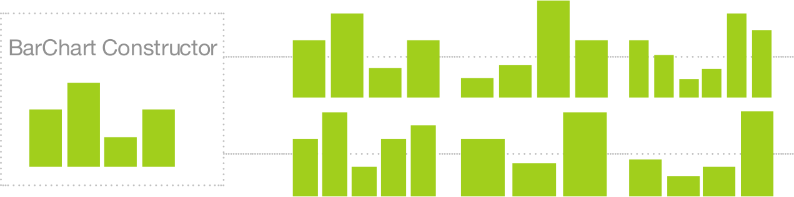

Your browser doesn't support the features required by impress.js, so you are presented with a simplified version of this presentation.
For the best experience please use the latest Chrome, Safari or Firefox browser.
Exploring Reusability with d3.chart
Overview
- d3.js
- Reusable Charts
- d3.chart
- The Future!
d3.js
Data-Driven Documents
D3.js is a JavaScript library for manipulating documents based on data. D3 helps you bring data to life using HTML, SVG and CSS [...]
d3js.org
Defining "chart"
What does it mean to be "reusable"?
Defining "reusable"
function chart() {
// generate chart here
}
A function; the standard unit of code reuse!
-- Mike Bostock, Towards Reusable Charts
Defining "reusable"
Our Take
Defining "reusable"
Repeatable

Defining "reusable"
Modifiable

Defining "reusable"
Configurable

Defining "reusable"
Extensible

Defining "reusable"
Composable


Naming is Difficult
- Understanding Data Visualization: An Interpretive Dance
- Open Web Kittens
- d3.chart: I'm Just Going to Eat a Sandwhich
- d3.chart: there will be free food and beer why are you even reading this?
- d3.chart: I'm Frightened by the Tendrils that Grow Out of Old Potatoes
- d3.chart: I've never told anyone, but i have a dark secret
- d3.chart: If you stare are the word "number" long enough, it starts to lose all meaning
- Reusable charts with d3.chart
- d3.chart
- "d3.chart: If you use nested "quotes" then things get "hard to read""
- don't "question" my use of "quotes"
- chart chart chart chart chart CHART chart
- Building charts with d3.chart: A talk about charts
- Charting New Territory
- Charting your way thought reusable charts with d3.charts: a talk about charts (Warning: talk contains no charts)
- An ALL AXIS Pass to d3.chart
- I don't always make reusable charts, but when I do, I use d3.chart
- d3.chart: we've always been at war with eastasia
- Don't like government eavesdropping?! make charts with d3.chart
- d3.chart: put THAT in your memory hole!
- d3.chart: An Exploration of Alternative Titles for this Talk
- d3.chart: Who Charted?
Layer
Connect Data to Elements
d3.js pattern
var bar = d3.select("svg g").selectAll("rect.bar")
.data(data);
bar.enter().append("rect")
.classed("bar", true);
.attr("height", function(d) { return d * 20; });
.attr("width", 0)
.transition()
.duration(1000)
.attr("width", 100);
bar.transition()
.duration(1000)
.attr("x", function(d, i) { return i * 100; });
bar.exit().transition().duration(1000)
.attr("width", 0)
.remove();
Setup
var layer = d3.select("svg g").layer({
dataBind: function(data) {
return this.selectAll("rect.bar").data(data);
},
insert: function() {
return this.append("rect").classed("bar", true);
},
events: {
enter: function() {
this.attr("height", function(d) { return d * 20; })
.attr("width", 0);
},
"enter:transition": function() {
this.duration(1000).attr("width", 100);
},
"update:transition": function() {
this.duration(1000)
.attr("x", function(d, i) { return i * 100; });
},
"exit:transition": function() {
this.duration(1000)
.attr("width", 0)
.remove();
}
}
});
Rendering
layer.draw(data);
Configuration
layer.on("enter", function() {
this.attr("width", 100)
.style("opacity", 0);
});
layer.on("enter:transition", function() {
this.style("opacity", 1);
});
layer.on("exit:transition", function() {
this.attr("width", 100)
.style("opacity", 0);
});
Chart
Manage Layers, Extend, and Compose
Manage Layers
d3.chart("Homme", {
initialize: function() {
this.layer("barLayer", this.base.append("g"), {
// layer options: insert, databind, events
});
}
});
var myChart = d3.select("svg").chart("Joshua");
myChart.draw(data);
Transform Input Data
d3.chart("Jones", {
transform: function(data) {
return d3.layout.chord()
.padding(.05)
.sortSubgroups(d3.descending)
.matrix(data);
}
});
Extend
d3.chart("Drummer", {
// chart options: initialize, transform, etc...
});
d3.chart("Drummer").extend("Grohl", {
// chart options: initialize, transform, etc...
});
Compose
d3.chart("TCV", {
initialize: function() {
this.mixin("Homme", this.base.append("g"), {
// chart options: initialize, transform, etc...
});
this.mixin("Grohl", this.base.append("g"), {
// chart options: initialize, transform, etc...
});
}
});
Listen
d3.chart("Jones", {
initialize: function() {
var chart = this;
// ...
barLayer.on("enter", function() {
this.on("mouseover", function() {
chart.trigger("brush:bar", arguments);
});
});
});
Map Input Data
d3.chart("Billy", {
dataAttrs: ["value"],
initialize: function() {
// ...
this.barLayer.on("enter", function() {
this.attr("height", function(d) {
return d.value;
});
});
}
});
var myChart = d3.select("svg").chart("Billy", {
dataMapping: {
value: function() {
return this.VALUE;
}
}
});
myChart.draw([ { VALUE: 23 } ]);
this.transition()
.transition()
.transition().text("Sharing");
Improved <path> and d3.layout support
Resources
-
d3.js
-
d3.chart
-
Miscellany


 Walkthrough of Bullet Chart
Walkthrough of Bullet Chart